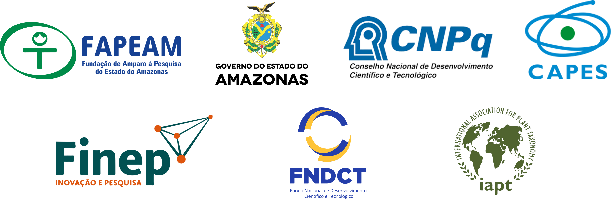
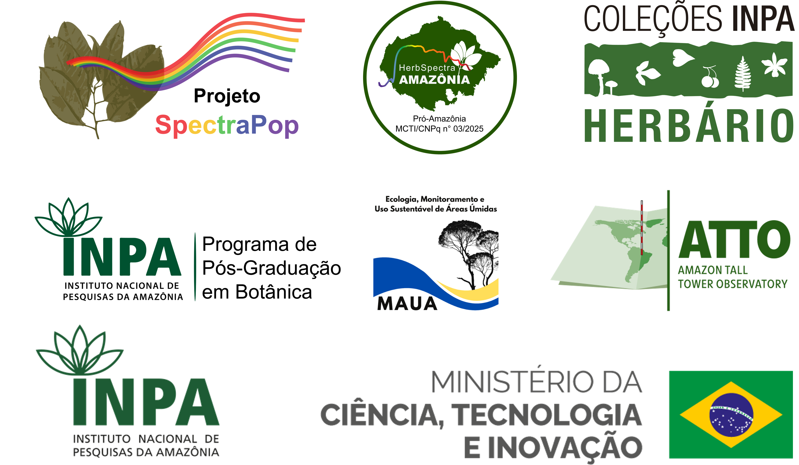
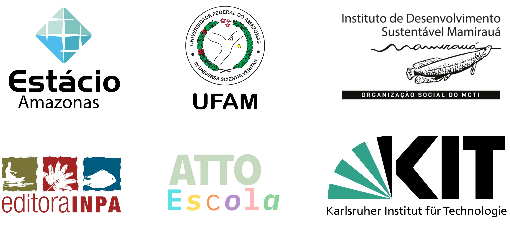

Popularización del uso de la Firma Espectral de la Especie en la identificación de los árboles del Manejo Forestal Sostenible en la Amazonía - SPECTRA POP
Convocatoria n.º 006/2024 - Mulher Faz Ciência - FAPEAM
Proceso n.º 01.02.016301.04984/2024-17
Resumen
Los errores en la identificación de especies maderables afectan a toda la cadena productiva del manejo forestal, desde la sostenibilidad del manejo de especies de alto valor comercial para futuros ciclos de aprovechamiento, hasta la fiscalización y la venta y comercialización de la madera. Por ello, con el fin de perfeccionar el proceso de identificación de especies para el manejo forestal sostenible, esta propuesta busca desarrollar y popularizar el uso de la firma espectral de las especies en la identificación de especies de alto valor comercial. El uso combinado de instrumentos de alta tecnología y técnicas apropiadas para discriminar especies arbóreas es necesario para mejorar el sistema de inventario de la biodiversidad en países tropicales. La espectroscopía foliar en el infrarrojo cercano ha mostrado ser prometedora en la discriminación de especies vegetales. Por lo tanto, pretendemos producir un herbario espectral, utilizar protocolos, probar equipos más accesibles y capacitar a personas de diferentes sectores de la sociedad. Así, creemos en la popularización del uso de esta herramienta, desarrollada en el Instituto Nacional de Investigaciones de la Amazonía (INPA), para mejorar la calidad de las identificaciones en el manejo forestal en la Amazonía. La popularización y la aplicación de esta herramienta aumentarán la sostenibilidad del manejo forestal en el estado de Amazonas. De esta manera, este proyecto busca desarrollar y popularizar una tecnología que beneficiará a Amazonas en lo ambiental, lo social y lo económico.
Objetivo general
Desarrollar y popularizar el herbario espectral (espectroscopía en el infrarrojo cercano) de especies maderables y no maderables de alto valor comercial, para su aplicación en el manejo forestal sostenible del estado de Amazonas.
Integrantes
Coordinación
 Flávia M. Durgante (MAUA/ATTO/INPA)
Flávia M. Durgante (MAUA/ATTO/INPA) 

Investigadores colaboradores
 Florian Wittmann (KIT/MAUA/ATTO)
Florian Wittmann (KIT/MAUA/ATTO) 

 Jochen Schöngart (MAUA/ATTO/INPA)
Jochen Schöngart (MAUA/ATTO/INPA) 

 Maria T. F. Piedade (MAUA/ATTO/INPA)
Maria T. F. Piedade (MAUA/ATTO/INPA) 

 Layon O. Demarchi (MAUA/INPA)
Layon O. Demarchi (MAUA/INPA) 

 Alberto Vicentini (INPA)
Alberto Vicentini (INPA) 

 Michael J. G. Hopkins (INPA)
Michael J. G. Hopkins (INPA) 

 Kelly C. Torralvo (IDSM)
Kelly C. Torralvo (IDSM) 

 Rafael M. Rabelo (IDSM)
Rafael M. Rabelo (IDSM) 

 Darlene Gris (IDSM)
Darlene Gris (IDSM) 

 Caroline C. Vasconcelos (UFAM)
Caroline C. Vasconcelos (UFAM) 

 Caroline L. Mallmann (UFSM/MAUA/INPA)
Caroline L. Mallmann (UFSM/MAUA/INPA) 

Becarios
 Samyra Ramos Chaves (MAUA/INPA) - Doctorado - Becaria CNPq DTI-A
Samyra Ramos Chaves (MAUA/INPA) - Doctorado - Becaria CNPq DTI-A 

 Hilana L. Hadlich (MAUA/INPA) - Doctorado - Becaria CNPq DTI-B
Hilana L. Hadlich (MAUA/INPA) - Doctorado - Becaria CNPq DTI-B 

 Kaio Cesar M. da Cunha (MAUA/INPA) - Magíster - Becario CNPq DTI-B
Kaio Cesar M. da Cunha (MAUA/INPA) - Magíster - Becario CNPq DTI-B 

 Túlio Alex Martins da Silva (MAUA/INPA) - Estudiante de doctorado - Becario CAPES
Túlio Alex Martins da Silva (MAUA/INPA) - Estudiante de doctorado - Becario CAPES 

 Maria Clara A. M. O. Ramos Ferro (MAUA/INPA) - Estudiante de maestría - Becaria CAPES
Maria Clara A. M. O. Ramos Ferro (MAUA/INPA) - Estudiante de maestría - Becaria CAPES 
 Cassia Sousa Ataide (UFAM/Herbario INPA) - Estudiante de pregrado - Becaria CNPq PIBIC
Cassia Sousa Ataide (UFAM/Herbario INPA) - Estudiante de pregrado - Becaria CNPq PIBIC 
 Yasmin Jéssica G. Guedes (UFAM/Herbario INPA) - Estudiante de pregrado - Becaria CNPq PIBIC
Yasmin Jéssica G. Guedes (UFAM/Herbario INPA) - Estudiante de pregrado - Becaria CNPq PIBIC 
Egresados
 Eliandra Rodrigues Ferreira (Estácio/Herbario INPA) - Estudiante de pregrado - Becaria CNPq PIBIC
Eliandra Rodrigues Ferreira (Estácio/Herbario INPA) - Estudiante de pregrado - Becaria CNPq PIBIC 
 Eduardo Leandro Cunha (UFAM/Herbario INPA) - Estudiante de pregrado - Becario CNPq PIBIC
Eduardo Leandro Cunha (UFAM/Herbario INPA) - Estudiante de pregrado - Becario CNPq PIBIC 
Cursos ofrecidos
 1.er Curso: 2 al 4 de abril de 2025 (INPA, Manaus, AM)
1.er Curso: 2 al 4 de abril de 2025 (INPA, Manaus, AM)
 2.º Curso: 17 al 19 de diciembre de 2025 (INPA, Manaus, AM)
2.º Curso: 17 al 19 de diciembre de 2025 (INPA, Manaus, AM)
 3.er Curso: 23 al 30 de marzo de 2026 (Sitio ATTO, São Sebastião do Uatumã, AM)
3.er Curso: 23 al 30 de marzo de 2026 (Sitio ATTO, São Sebastião do Uatumã, AM)
 4.º Curso (ERBOT Norte): 26 de abril de 2026 (ICB/UFPA, Belém, PA)
4.º Curso (ERBOT Norte): 26 de abril de 2026 (ICB/UFPA, Belém, PA)
 5.º Curso: 4 al 6 de mayo de 2026 (Herbario/Museo Goeldi, Belém, PA)
5.º Curso: 4 al 6 de mayo de 2026 (Herbario/Museo Goeldi, Belém, PA)
 6.º Curso: 9 al 11 de junio de 2026 (Herbario/Instituto Mamirauá, Tefé, AM)
6.º Curso: 9 al 11 de junio de 2026 (Herbario/Instituto Mamirauá, Tefé, AM)
Financiadores
El proyecto SPECTRA POP es financiado por la Fundación de Apoyo a la Investigación del Estado de Amazonas (FAPEAM), Convocatoria n.º 006/2024 - Mulher Faz Ciência (Proceso n.º 01.02.016301.04984/2024-17), y cuenta con el apoyo del Herbario INPA a través de la Convocatoria pública MCTI/FINEP/FNDCT n.º 02/2016 – Centros Nacionales Multiusuarios.

Realización

Aliados
